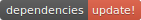

vox
Repositorio para la edición comunitaria (software libre) de VOX, un sistema gestor de contenidos para procesos de selección; desarrollado con Ruby on Rails.
El alcance del proyecto es poder crear y gestionar un proceso de selección completo (creación, apertura, votación, cierre) con sus usuarios asociados: organizador y jurado. Administrando un padrón y teniendo acceso al escrutinio de los votos.
El Origen. En esencia es un experimento de aplicación y practica de los conceptos de BDD y TDD utilizando el lenguaje de programación Ruby y el framework Ruby on Rails. Algunos de los archivos no siguen exactamente las buenas practicas, en algunos casos por desconocimiento y en otros como parte del experimento; ya que es la primera experiencia con Rails y la metodología seguida. Como es parte la parte practica de mi "trabajo final de carrera". No se pueden aceptar contribuciones mayores hasta no completar un proceso de evaluación en la universidad a la que asisto; sin embargo toda contribución (sugerencias de cambio), consejo, critica constructiva, consultas son bienvenidas.
Herramientas.
- Para las Historias de Usuario se utilizará: PivotalTracker
- Para BDD, se utiliza: Cucumber, Capybara.
- Para TDD, se utiliza: RSpec.
- Para probar continuamente, se utiliza: Guard
- Para la Integración Continua: Travis-ci
- Para el deploy, el servicio de hosting: Heroku
Servicios Externos.
VOX esta siendo integrado con servicios externos para mejorar la calidad de su código. A continuación puede ver una lista de ellos.
Calidad del Código, seǵun CodeClimate

Covertura de código con pruebas, según Coveralls.io
Integración Continua: con Travis-ci.org

Dependency Status: 
Notas Técnicas
Ruby version: ruby 1.9.3p194 (2012-04-20 revision 35410) [x86_64-linux]
Rails version: rails 4.0.1
System dependencies: mirar el archivo gemfile
Configuration: Nada especial por ahora.
Instalación para Dev: bundler install
Database creation: rake db:migrate
Database initialization: rake db:seed rake db:test:prepare
How to run the test suite: cucumber cucumber --profile wip (para trabajar sobre algo en particular) rspec
Services (job queues, cache servers, search engines, etc.): nada especial.
Deployment instructions:
- cambiar el token ejecutando: rake secret
- Crear las variables de entorno:
- DATABASE_NAME
- DATABASE_USER
- DATABASE_PASS
- SECRET_KEY_BASE para el secret token
- cambiar los .yml de Travis y de Coveralls.